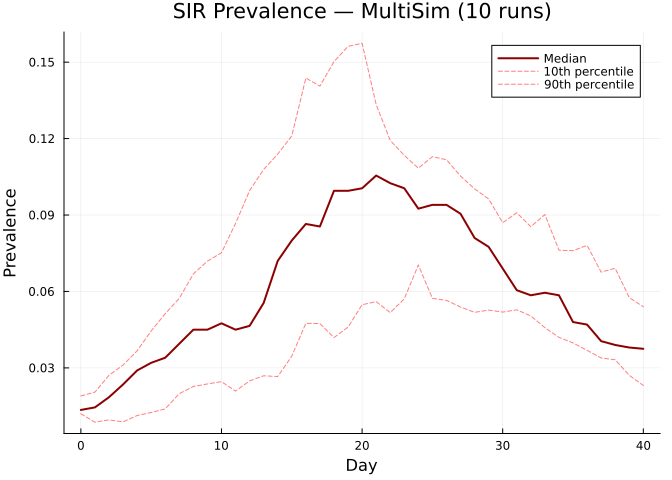
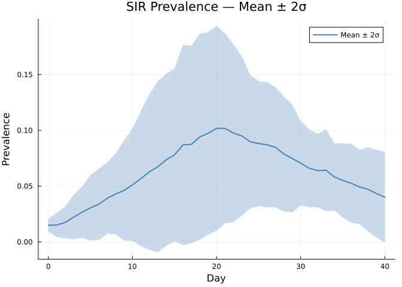
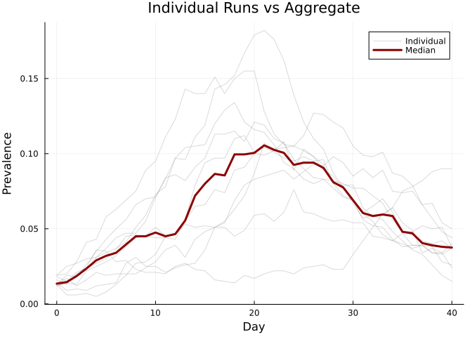

MultiSim: Parallel Runs and Uncertainty
Simon Frost
- Overview
- Basic MultiSim
- Reduced results (median + quantiles)
- Mean-based reduction
- Accessing raw results
- Individual run comparison
- Summary
Overview
Stochastic simulations produce different outcomes each run. MultiSim runs multiple replications and aggregates results to quantify uncertainty. Unlike Python starsim (limited by the GIL), Julia’s MultiSim uses true multi-threading via Threads.@threads.
Basic MultiSim
using Starsim
using Plots
n_contacts = 10
beta = 0.5 / n_contacts
base = Sim(
n_agents = 1_000,
networks = RandomNet(n_contacts=n_contacts),
diseases = SIR(beta=beta, dur_inf=4.0, init_prev=0.01),
dt = 1.0,
stop = 40.0,
rand_seed = 42,
verbose = 0,
)
msim = MultiSim(base, n_runs=10)
run!(msim; verbose=0)
println(msim)MultiSim(n_runs=10, status=complete, threads=1)Reduced results (median + quantiles)
The default reduce! computes the median with 10th/90th percentile bounds.
reduce!(msim)
key = :sir_prevalence
rr = msim.reduced[key]
tvec = 0:length(rr.values)-1
plot(tvec, rr.values, lw=2, color=:darkred, label="Median")
plot!(tvec, rr.low, lw=1, ls=:dash, color=:red, alpha=0.5, label="10th percentile")
plot!(tvec, rr.high, lw=1, ls=:dash, color=:red, alpha=0.5, label="90th percentile")
xlabel!("Day")
ylabel!("Prevalence")
title!("SIR Prevalence — MultiSim (10 runs)")
Mean-based reduction
mean! uses mean ± k×σ bounds (default k=2).
mean!(msim; bounds=2.0)
rr = msim.reduced[:sir_prevalence]
tvec = 0:length(rr.values)-1
plot(tvec, rr.values, ribbon=(rr.values .- rr.low, rr.high .- rr.values),
fillalpha=0.3, lw=2, color=:steelblue, label="Mean ± 2σ")
xlabel!("Day")
ylabel!("Prevalence")
title!("SIR Prevalence — Mean ± 2σ")
Accessing raw results
Raw results are stored as npts × n_runs matrices.
prev_mat = msim.results[:sir_prevalence]
println("Shape: $(size(prev_mat)) ($(size(prev_mat,1)) timesteps × $(size(prev_mat,2)) runs)")
println("Available keys: $(result_keys(msim))")Shape: (41, 10) (41 timesteps × 10 runs)
Available keys: [:sir_prevalence, :sir_new_infections, :sir_n_susceptible, :sir_n_recovered, :sir_n_infected]Individual run comparison
prev_mat = msim.results[:sir_prevalence]
tvec = 0:size(prev_mat, 1)-1
p = plot(xlabel="Day", ylabel="Prevalence", title="Individual Runs vs Aggregate")
for j in 1:msim.n_runs
plot!(p, tvec, prev_mat[:, j], alpha=0.3, color=:gray, label=(j==1 ? "Individual" : ""))
end
reduce!(msim)
rr = msim.reduced[:sir_prevalence]
plot!(p, tvec, rr.values, lw=3, color=:darkred, label="Median")
p
Summary
MultiSimautomates running multiple stochastic replications- Each run gets a unique random seed derived from the base
reduce!provides median + quantile bounds;mean!provides mean ± k×σ- Julia threads give true parallelism — no GIL limitation
- Raw results accessible as matrices for custom analysis